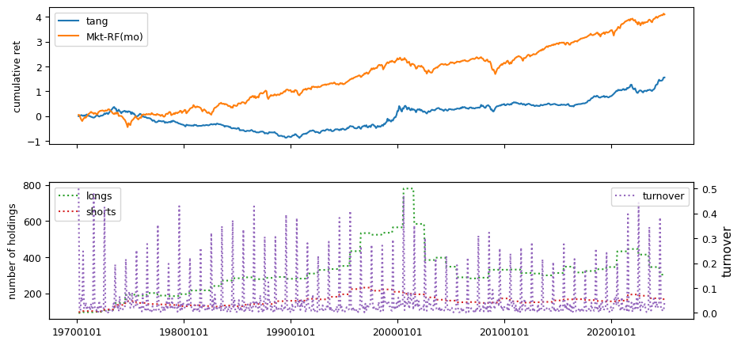
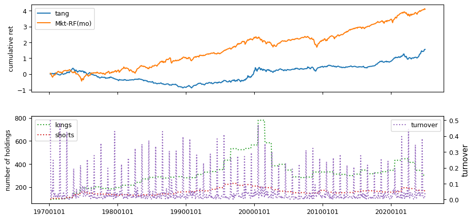

Quant Factors#
Quants do it with models - Anonymous
Factor investing is a systematic approach to asset pricing and portfolio management based on the premise that various risk factors drive asset returns. Factor-based investing recognizes that besides broad market exposure, additional systematic risks—such as value, momentum, and volatility—play a crucial role in determining returns. This framework has evolved over time, beginning with early models like the Capital Asset Pricing Model (CAPM) and expanding to multifactor models, behavioral theories, and adaptive market perspectives. This analysis explores the empirical performance of different factor strategies, and the methodologies used to evaluate them. We also examine historical backtests and employ clustering techniques to group similar investment strategies, seeking to identify style factors and construct effective benchmarks.
from pandas import DataFrame, Series
import pandas as pd
import numpy as np
import matplotlib.pyplot as plt
import matplotlib.cm as cm
from sklearn.cluster import AgglomerativeClustering, KMeans
from scipy.cluster.hierarchy import dendrogram
from sklearn.metrics import silhouette_samples, silhouette_score
from tqdm import tqdm
import warnings
from datetime import datetime
from typing import List, Tuple
from finds.database import SQL, RedisDB
from finds.structured import (BusDay, Stocks, Benchmarks, Signals, SignalsFrame,
CRSP, PSTAT, IBES, CRSPBuffer)
from finds.backtesting import BackTest, univariate_sorts
from secret import credentials, paths, CRSP_DATE
VERBOSE = 0
if not VERBOSE:
warnings.simplefilter(action='ignore', category=FutureWarning)
#%matplotlib qt
LAST_DATE = CRSP_DATE
# open connections
imgdir = paths['images']
sql = SQL(**credentials['sql'], verbose=VERBOSE)
user = SQL(**credentials['user'], verbose=VERBOSE)
rdb = RedisDB(**credentials['redis'])
bd = BusDay(sql, verbose=VERBOSE)
crsp = CRSP(sql, bd, rdb=rdb, verbose=VERBOSE)
pstat = PSTAT(sql, bd, verbose=VERBOSE)
bench = Benchmarks(sql, bd, verbose=VERBOSE)
signals = Signals(user, verbose=VERBOSE)
ibes = IBES(sql, bd, verbose=VERBOSE)
backtest = BackTest(user, bench, 'RF', LAST_DATE, verbose=VERBOSE)
outdir = paths['scratch'] / 'output'
Factor investing#
Factor investing posits that asset returns are driven by exposure to specific risk factors, which determine their risk premiums. The market itself is an investable factor, as described by the Capital Asset Pricing Model (CAPM), which asserts that market exposure is the sole driver of asset returns. However, additional factors such as interest rates, value-growth investing, low volatility strategies, and momentum portfolios have been widely recognized. Macroeconomic factors, including inflation and economic growth, also influence asset returns. Assets exhibit varying degrees of exposure to these risk factors, with greater exposure leading to higher risk premiums. Essentially, assets can be viewed as bundles of different factor exposures.
Early multifactor models include Stephen Ross’s (1976) Arbitrage Pricing Theory (APT), which argues that risk factors cannot be arbitraged or diversified away, and Robert Merton’s Intertemporal Capital Asset Pricing Model (ICAPM), which accounts for investors hedging risky positions over multiple time periods. Additionally, behavioral finance theories suggest that factor premiums arise due to investor biases, such as overreaction, underreaction, and bounded rationality.
Adaptive Markets Hypothesis#
Andrew Lo’s (2004) Adaptive Markets Hypothesis proposes that financial markets are shaped by principles of evolutionary biology rather than fixed physical laws. This perspective suggests that investment performance fluctuates as the financial ecosystem and market conditions evolve. Lo advocates studying financial markets by analyzing different “species” of investors—individuals and institutions that share common traits—and tracking their size, growth, interactions, and behavioral tendencies.
Factor Zoo#
John Cochrane (2011) coined the term Factor Zoo to highlight the rapid proliferation of newly identified factors in academic research. In response, Green, Hand, and Zhang (2017) systematically examined nearly 100 firm characteristic factors, addressing issues such as microcap stock overweighting and data snooping biases. Their study assessed the predictive power of these factors across different time periods.
# preload monthly stocks data
monthly = CRSPBuffer(stocks=crsp, dataset='monthly', fields=['ret', 'retx', 'prc'],
beg=19251201, end=CRSP_DATE)
# signals to flip signs when forming spread portfolios
leverage = {'mom1m':-1, 'mom36m':-1, 'pricedelay':-1, 'absacc':-1, 'acc':-1,
'agr':-1, 'chcsho':-1, 'egr':-1, 'mve_ia':-1, 'pctacc':-1,
'aeavol':-1, 'disp':-1, 'stdacc':-1, 'stdcf':-1, 'secured':-1,
'maxret':-1, 'ill':-1, 'zerotrade':-1, 'cashpr':-1, 'chinv':-1,
'invest':-1, 'cinvest':-1, 'idiovol':-1, 'retvol':-1}
Helper functions
# to lag yearly characteristics
def as_lags(df, var, key, nlags):
"""Return dataframe with {nlags} of column {var}, same {key} value in row"""
out = df[[var]].rename(columns={var: 0}) # first col: not shifted
for i in range(1, nlags):
prev = df[[key, var]].shift(i, fill_value=0) # next col: shifted i+1
prev.loc[prev[key] != df[key], :] = np.nan # require same {key} value
out.insert(i, i, prev[var])
return out
# rolling window of returns
def as_rolling(df, other, width=0, dropna=True):
"""join next dataframe to a sliding window with fixed number of columns"""
df = df.join(other, how='outer', sort=True, rsuffix='r')
if width and len(df.columns) > width: # if wider than width
df = df.iloc[:, (len(df.columns)-width):] # then drop first cols
if dropna: # drop empty rows
df = df[df.count(axis=1) > 0]
df.columns = list(range(len(df.columns)))
return df
# pipeline to run backtest
def backtest_pipeline(backtest: BackTest,
stocks: Stocks,
holdings: DataFrame,
label: str,
benchnames: List[str],
suffix: str = '',
overlap: int = 0,
outdir: str ='',
num: int = None) -> DataFrame:
"""wrapper to run a backtest pipeline
Args:
backtest: To compute backtest results
stocks: Where securities returns can be retrieved from (e.g. CRSP)
holdings: dict (key int date) of Series holdings (key permno)
label: Label of signal to backtest
benchnames: Names of benchmarks to attribute portfolio performance
overlap: Number of overlapping holdings to smooth
num: Figure num to plot to
Returns:
DataFrame of performance returns in rows
Notes:
graph and summary statistics are output to jpg and (appended) html
backtest object updated with performance and attribution data
"""
summary = backtest(stocks, holdings, label, overlap=overlap)
excess = backtest.fit(benchnames)
backtest.write(label)
backtest.plot(num=num, label=label + suffix)
if VERBOSE:
print(pd.Series(backtest.annualized, name=label + suffix)\
.to_frame().T.round(3).to_string())
if outdir:
# performance metrics from backtest to output
sub = ['alpha', 'excess', 'appraisal', 'sharpe', 'welch-t', 'welch-p']
with open(outdir / 'index.html', 'at') as f:
f.write(f"<p><hr><h2>{label + suffix}</h2>\n<pre>\n")
f.write("{}-{} {}\n".format(min(backtest.excess.index),
max(backtest.excess.index),
benchnames))
f.write("{:12s} ".format("Annualized"))
f.write("".join(f"{k:>10s}" for k in sub) + "\n")
f.write("{:12s} ".format(label + ":"))
f.write("".join(f"{backtest.annualized[k]:10.4f}" for k in sub))
f.write(f"\n</pre><p>{datetime.now()}\n")
return summary
Past prices#
Momentum and dividend yield data are sourced from CRSP monthly records
beg, end = 19251231, LAST_DATE
intervals = {'mom12m': (2,12),
'mom36m': (13,36),
'mom6m': (2,6),
'mom1m': (1,1)}
for label, past in tqdm(intervals.items(), total=len(intervals)):
out = []
rebaldates = bd.date_range(bd.endmo(beg, past[1]), end, 'endmo')
for rebaldate in rebaldates:
start = bd.endmo(rebaldate, -past[1])
beg1 = bd.offset(start, 1)
end1 = bd.endmo(rebaldate, 1-past[0])
df = crsp.get_universe(end1)
# require data available as of start month and end month (universe)
df['start'] = monthly.get_section(dataset='monthly',
fields=['ret'],
date_field='date',
date=start).reindex(df.index)
df[label] = monthly.get_ret(beg1, end1).reindex(df.index)
df['permno'] = df.index
df['rebaldate'] = rebaldate
df = df.dropna(subset=['start'])
out.append(df[['rebaldate', 'permno', label]]) # append rows
out = pd.concat(out, axis=0, ignore_index=True)
n = signals.write(out, label, overwrite=True)
beg, end = 19270101, LAST_DATE
columns = ['chmom', 'divyld', 'indmom']
out = []
for rebaldate in bd.date_range(beg, end, 'endmo'):
start = bd.endmo(rebaldate, -12)
beg1 = bd.offset(start, 1)
end1 = bd.endmo(rebaldate, -6)
beg2 = bd.offset(end1, 1)
end2 = bd.endmo(rebaldate)
df = crsp.get_universe(end1)
df['start'] = monthly.get_section(dataset='monthly',
fields=['ret'],
date_field='date',
date=start).reindex(df.index)
df['end2'] = monthly.get_section(dataset='monthly',
fields=['ret'],
date_field='date',
date=end2).reindex(df.index)
df['mom2'] = monthly.get_ret(beg2, end2).reindex(df.index)
df['mom1'] = monthly.get_ret(beg1, end1).reindex(df.index)
df['divyld'] = crsp.get_divamt(beg1, end2)\
.reindex(df.index)['divamt']\
.div(df['cap'])\
.fillna(0)
df['chmom'] = df['mom1'] - df['mom2']
# 6-month two-digit sic industry momentum (group means of 'mom1')
df['sic2'] = df['siccd'] // 100
df = df.join(DataFrame(df.groupby(['sic2'])['mom1'].mean())\
.rename(columns={'mom1': 'indmom'}),
on='sic2', how='left')
df['permno'] = df.index
df['rebaldate'] = rebaldate
out.append(df.dropna(subset=['start','end2'])\
[['rebaldate', 'permno'] + columns])
out = pd.concat(out, axis=0, ignore_index=True)
for label in columns: # save signal values to sql
n = signals.write(out, label, overwrite=True)
100%|██████████| 4/4 [47:03<00:00, 705.93s/it]
benchnames = ['Mkt-RF(mo)']
rebalbeg, rebalend = 19260101, LAST_DATE
columns = ['mom12m', 'mom6m', 'chmom', 'indmom', 'divyld', 'mom1m', 'mom36m']
for label in tqdm(columns):
holdings = univariate_sorts(monthly,
label,
SignalsFrame(signals.read(label)),
rebalbeg,
rebalend,
window=1,
months=[],
maxdecile=8,
minprc=1.0,
pct=(10.0, 90.0),
leverage=leverage.get(label, 1))
excess = backtest_pipeline(backtest,
monthly,
holdings,
label,
benchnames,
overlap=0,
outdir=outdir,
suffix=(leverage.get(label, 1) < 0)*'(-)')
100%|██████████| 7/7 [22:01<00:00, 188.74s/it]
# helper to calculate beta, idiovol and price delay from weekly returns
def regress(x: np.array, y: np.array) -> Tuple[float, float, float]:
"""helper method to calculate beta, idiovol and price delay
Args:
x: equal-weighted market returns (in ascending time order)
y: stock returns (in ascending time order). NaN's will be discarded.
Returns:
beta: slope from regression on market returns and intercept
idiovol: mean squared error of residuals
pricedelay: increase of adjusted Rsq with four market lags over without
"""
v = np.logical_not(np.isnan(y))
y = y[v]
x = x[v]
n0 = len(y)
A0 = np.vstack([x, np.ones(len(y))]).T
b0 = np.linalg.inv(A0.T.dot(A0)).dot(A0.T.dot(y)) # univariate coeffs
sse0 = np.mean((y - A0.dot(b0))**2)
sst0 = np.mean((y - np.mean(y))**2)
if (sst0>0 and sse0>0):
R0 = (1 - ((sse0 / (n0 - 2)) / (sst0 / (n0 - 1))))
else:
R0 = 0
y4 = y[4:]
n4 = len(y4)
A4 = np.vstack([x[0:-4], x[1:-3], x[2:-2], x[3:-1], x[4:],
np.ones(n4)]).T
b4 = np.linalg.inv(A4.T.dot(A4)).dot(A4.T.dot(y4)) # four lagged coeffs
sse4 = np.mean((y4 - A4.dot(b4))**2)
sst4 = np.mean((y4 - np.mean(y4))**2)
if sst4 > 0 and sse4 > 0:
R4 = (1 - ((sse4 / (n4 - 6)) / (sst4 / (n4 - 1))))
else:
R4 = 0
return [b0[0],
sse0 or np.nan,
(1 -(R0 / R4)) if R0>0 and R4>0 else np.nan]
Weekly price responses derived from CRSP daily records.
beg, end = 19260101, LAST_DATE
columns = ['beta', 'idiovol', 'pricedelay']
wd = BusDay(sql, endweek='Wed') # custom weekly trading day calendar
width = 3*52+1 # up to 3 years of weekly returns
minvalid = 52 # at least 52 weeks required to compute beta
weekly = DataFrame() # rolling window of weekly stock returns
mkt = DataFrame() # to queue equal-weighted market returns
out = [] # to accumulate final calculations
for date in tqdm(wd.date_range(beg, end, 'weekly')):
df = crsp.get_ret(wd.begwk(date), date)
mkt = as_rolling(mkt, # rolling window of weekly mkt returns
DataFrame(data=[df.mean()], columns=[date]),
width=width)
weekly = as_rolling(weekly, # rolling window of weekly stock returns
df.rename(date),
width=width)
valid = weekly.count(axis=1) >= minvalid # require min number weeks
if valid.any():
result = DataFrame([regress(mkt.values[0], y)
for y in weekly.loc[valid].values],
columns=columns)
result['permno'] = weekly.index[valid].values
result['rebaldate'] = date
if wd.ismonthend(date): # signal value from last week of month
out.append(result)
out = pd.concat(out, axis=0, ignore_index=True)
for label in columns:
signals.write(out, label, overwrite=True)
100%|██████████| 5165/5165 [31:49<00:00, 2.70it/s]
benchnames = ['Mkt-RF(mo)']
rebalbeg, rebalend = 19290601, LAST_DATE
for label in tqdm(columns):
holdings = univariate_sorts(monthly,
label,
SignalsFrame(signals.read(label)),
rebalbeg,
rebalend,
window=1,
months=[],
maxdecile=8,
pct=(10., 90.),
leverage=leverage.get(label, 1))
excess = backtest_pipeline(backtest,
monthly,
holdings,
label,
benchnames,
overlap=0,
outdir=outdir,
suffix=(leverage.get(label, 1) < 0)*'(-)')
100%|██████████| 3/3 [07:48<00:00, 156.06s/it]
Liquidity#
Liquidity signals are derived from daily stock return data.
beg, end = 19830601, LAST_DATE # nasdaq/volume from after 1982
columns = ['ill', 'maxret', 'retvol', 'baspread', 'std_dolvol',
'zerotrade', 'std_turn', 'turn']
out = []
dolvol = []
turn = DataFrame() # to average turn signal over rolling 3-months
dt = bd.date_range(bd.begmo(beg,-3), end, 'endmo') # monthly rebalances
chunksize = 12 # each chunk is 12 months (1 year)
chunks = [dt[i:(i+chunksize)] for i in range(0, len(dt), chunksize)]
for chunk in tqdm(chunks):
q = (f"SELECT permno, date, ret, askhi, bidlo, prc, vol, shrout "
f" FROM {crsp['daily'].key}"
f" WHERE date>={bd.begmo(chunk[0])}"
f" AND date<={chunk[-1]}") # retrieve a chunk
f = crsp.sql.read_dataframe(q).sort_values(['permno', 'date'])
f['baspread'] = ((f['askhi'] - f['bidlo']) / ((f['askhi'] + f['bidlo']) / 2))
f['dolvol'] = f['prc'].abs() * f['vol']
f['turn1'] = f['vol'] / f['shrout']
f.loc[f['dolvol']>0, 'ldv'] = np.log(f.loc[f['dolvol']>0, 'dolvol'])
f['ill'] = 1000000 * f['ret'].abs() / f['dolvol']
for rebaldate in chunk: # for each rebaldate in the chunk
grouped = f[f['date'].ge(bd.begmo(rebaldate))
& f['date'].le(rebaldate)].groupby('permno')
df = grouped[['ret']].max().rename(columns={'ret': 'maxret'})
df['retvol'] = grouped['ret'].std()
df['baspread'] = grouped['baspread'].mean()
df['std_dolvol'] = grouped['ldv'].std()
df['ill'] = grouped['ill'].mean()
dv = grouped['dolvol'].sum()
df.loc[dv > 0, 'dolvol'] = np.log(dv[dv > 0])
df['turn1'] = grouped['turn1'].sum()
df['std_turn'] = grouped['turn1'].std()
df['countzero'] = grouped['vol'].apply(lambda v: sum(v==0))
df['ndays'] = grouped['prc'].count()
turn = as_rolling(turn, df[['turn1']], width=3)
df['turn'] = turn.reindex(df.index).mean(axis=1, skipna=False)
df.loc[df['turn1'].le(0), 'turn1'] = 0
df.loc[df['ndays'].le(0), 'ndays'] = 0
df['zerotrade'] = ((df['countzero'] + ((1/df['turn1'])/480000))
* 21/df['ndays'])
df['rebaldate'] = rebaldate
df = df.reset_index()
out.append(df[['permno', 'rebaldate'] + columns])
if rebaldate < bd.endmo(end):
df['rebaldate'] = bd.endmo(rebaldate, 1)
dolvol.append(df[['permno','rebaldate','dolvol']])
out = pd.concat(out, axis=0, ignore_index=True)
dolvol = pd.concat(dolvol, axis=0, ignore_index=True)
100%|██████████| 42/42 [25:56<00:00, 37.05s/it]
for label in columns:
n = signals.write(out, label, overwrite=True)
n = signals.write(dolvol, 'dolvol', overwrite=True)
rebalbeg, rebalend = 19830601, LAST_DATE
benchnames = ['Mkt-RF(mo)']
for label in tqdm(columns + ['dolvol']):
holdings = univariate_sorts(monthly,
label,
SignalsFrame(signals.read(label)),
rebalbeg,
rebalend,
window=1,
months=[],
maxdecile=8,
pct=(10., 90.),
leverage=leverage.get(label, 1))
excess = backtest_pipeline(backtest,
monthly,
holdings,
label,
benchnames,
overlap=0,
outdir=outdir,
suffix=(leverage.get(label, 1) < 0)*'(-)')
100%|██████████| 9/9 [09:46<00:00, 65.17s/it]
Fundamentals#
Fundamental signals are collected from Compustat, using both annual and quarterly datasets.
columns = ['absacc', 'acc', 'agr', 'bm', 'cashpr', 'cfp', 'chcsho',
'chinv', 'depr', 'dy', 'egr', 'ep', 'gma', 'grcapx',
'grltnoa', 'hire', 'invest', 'lev', 'lgr' ,
'pchdepr', 'pchgm_pchsale', 'pchquick',
'pchsale_pchinvt', 'pchsale_pchrect', 'pchsale_pchxsga',
'pchsaleinv', 'pctacc', 'quick', 'rd_sale', 'rd_mve',
'realestate', 'salecash', 'salerec', 'saleinv', 'secured',
'sgr', 'sp', 'tang', 'bm_ia', 'cfp_ia', 'chatoia' , 'chpmia',
'pchcapx_ia', 'chempia', 'mve_ia']
numlag = 6 # number of months to lag data for rebalance
end = LAST_DATE # last data date
# retrieve annual, keep [permno, datadate] with non null prccq if any
fields = ['sic', 'fyear', 'ib', 'oancf', 'at', 'act', 'che', 'lct',
'dlc', 'dltt', 'prcc_f', 'csho', 'invt', 'dp', 'ppent',
'dvt', 'ceq', 'txp', 'revt', 'cogs', 'rect', 'aco', 'intan',
'ao', 'ap', 'lco', 'lo', 'capx', 'emp', 'ppegt', 'lt',
'sale', 'xsga', 'xrd', 'fatb', 'fatl', 'dm']
df = pstat.get_linked(dataset='annual',
fields=fields,
date_field='datadate',
where=(f"indfmt = 'INDL' "
f" AND datafmt = 'STD'"
f" AND curcd = 'USD' "
f" AND popsrc = 'D'"
f" AND consol = 'C'"
f" AND datadate <= {end//100}31"))
fund = df.sort_values(['permno', 'datadate', 'ib'])\
.drop_duplicates(['permno', 'datadate'])\
.dropna(subset=['ib'])
fund.index = list(zip(fund['permno'], fund['datadate'])) # multi-index
fund['rebaldate'] = bd.endmo(fund.datadate, numlag)
# precompute, and lag common metrics: mve_f avg_at sic2
fund['sic2'] = np.where(fund['sic'].notna(), fund['sic'] // 100, 0)
fund['fyear'] = fund['datadate'] // 10000 # can delete this
fund['mve_f'] = fund['prcc_f'] * fund['csho']
lag = fund.shift(1, fill_value=0)
lag.loc[lag['permno'] != fund['permno'], fields] = np.nan
fund['avg_at'] = (fund['at'] + lag['at']) / 2
lag2 = fund.shift(2, fill_value=0)
lag2.loc[lag2['permno'] != fund['permno'], fields] = np.nan
lag['avg_at'] = (lag['at'] + lag2['at']) / 2
fund['bm'] = fund['ceq'] / fund['mve_f']
fund['cashpr'] = (fund['mve_f'] + fund['dltt'] - fund['at'])/fund['che']
fund['depr'] = fund['dp'] / fund['ppent']
fund['dy'] = fund['dvt'] / fund['mve_f']
fund['ep'] = fund['ib'] / fund['mve_f']
fund['lev'] = fund['lt'] / fund['mve_f']
fund['quick'] = (fund['act'] - fund['invt']) / fund['lct']
fund['rd_sale'] = fund['xrd'] / fund['sale']
fund['rd_mve'] = fund['xrd'] / fund['mve_f']
fund['realestate'] = ((fund['fatb'] + fund['fatl']) /
np.where(fund['ppegt'].notna(),
fund['ppegt'], fund['ppent']))
fund['salecash'] = fund['sale'] / fund['che']
fund['salerec'] = fund['sale'] / fund['rect']
fund['saleinv'] = fund['sale'] / fund['invt']
fund['secured'] = fund['dm'] / fund['dltt']
fund['sp'] = fund['sale'] / fund['mve_f']
fund['tang'] = (fund['che'] + fund['rect'] * 0.715 + fund['invt'] * 0.547
+ fund['ppent'] * 0.535) / fund['at']
# changes: agr chcsho chinv egr gma egr grcapx grltnoa emp invest lgr
fund['agr'] = (fund['at'] / lag['at'])
fund['chcsho'] = (fund['csho'] / lag['csho'])
fund['chinv'] = ((fund['invt'] - lag['invt']) / fund['avg_at'])
fund['egr'] = (fund['ceq'] / lag['ceq'])
fund['gma'] = ((fund['revt'] - fund['cogs']) / lag['at'])
fund['grcapx'] = (fund['capx'] / lag2['capx'])
fund['grltnoa'] = (((fund['rect']
+ fund['invt']
+ fund['ppent']
+ fund['aco']
+ fund['intan']
+ fund['ao']
- fund['ap']
- fund['lco']
- fund['lo'])
/ (lag['rect']
+ lag['invt']
+ lag['ppent']
+ lag['aco']
+ lag['intan']
+ lag['ao']
- lag['ap']
- lag['lco']
- lag['lo']))
- ((fund['rect']
+ fund['invt']
+ fund['aco']
- fund['ap']
- fund['lco'])
- (lag['rect']
+ lag['invt']
+ lag['aco']
- lag['ap']
- lag['lco']))) / fund['avg_at']
fund['hire'] = ((fund['emp'] / lag['emp']) - 1).fillna(0)
fund['invest'] = (((fund['ppegt'] - lag['ppegt'])
+ (fund['invt'] - lag['invt'])) / lag['at'])
fund['invest'] = fund['invest'].where(fund['invest'].notna(),
((fund['ppent'] - lag['ppent'])
+ (fund['invt'] - lag['invt'])) / lag['at'])
fund['lgr'] = (fund['lt'] / lag['lt'])
fund['pchdepr'] = ((fund['dp'] / fund['ppent']) / (lag['dp'] / lag['ppent']))
fund['pchgm_pchsale'] = (((fund['sale'] - fund['cogs']) / (lag['sale'] - lag['cogs']))
- (fund['sale'] / lag['sale']))
fund['pchquick'] = (((fund['act'] - fund['invt']) / fund['lct'])
/ ((lag['act'] - lag['invt']) / lag['lct']))
fund['pchsale_pchinvt'] = ((fund['sale'] / lag['sale']) - (fund['invt'] / lag['invt']))
fund['pchsale_pchrect'] = ((fund['sale'] / lag['sale']) - (fund['rect'] / lag['rect']))
fund['pchsale_pchxsga'] = ((fund['sale'] / lag['sale']) - (fund['xsga'] / lag['xsga']))
fund['pchsaleinv'] = ((fund['sale'] / fund['invt']) / (lag['sale'] / lag['invt']))
fund['sgr'] = (fund['sale'] / lag['sale'])
fund['chato'] = ((fund['sale'] / fund['avg_at']) - (lag['sale'] / lag['avg_at']))
fund['chpm'] = (fund['ib'] / fund['sale']) - (lag['ib'] / lag['sale'])
fund['pchcapx'] = fund['capx'] / lag['capx']
# compute signals with alternative definitions: acc absacc cfp
fund['_acc'] = (((fund['act'] - lag['act']) - (fund['che'] - lag['che']))
- ((fund['lct'] - lag['lct']) - (fund['dlc'] - lag['dlc'])
- (fund['txp'] - lag['txp']) - fund['dp']))
fund['cfp'] = ((fund['ib'] - (((fund['act'] - lag['act']) - (fund['che'] - lag['che']))
- ((fund['lct'] - lag['lct'])
- (fund['dlc'] - lag['dlc'])
- (fund['txp'] - lag['txp'])
- fund['dp']))) / fund['mve_f'])
g = fund['oancf'].notnull()
fund.loc[g, 'cfp'] = fund.loc[g, 'oancf'] / fund.loc[g, 'mve_f']
fund.loc[g, '_acc'] = fund.loc[g, 'ib'] - fund.loc[g, 'oancf']
fund['acc'] = fund['_acc'] / fund['avg_at']
fund['absacc'] = abs(fund['_acc']) / fund['avg_at']
fund['pctacc'] = fund['_acc'] / abs(fund['ib'])
h = (fund['ib'].abs() <= 0.01)
fund.loc[h, 'pctacc'] = fund.loc[h, '_acc'] / 0.01
# industry-adjusted
cols = {'bm_ia': 'bm', 'cfp_ia': 'cfp', 'chatoia': 'chato',
'chpmia': 'chpm', 'pchcapx_ia': 'pchcapx',
'chempia': 'hire', 'mve_ia': 'mve_f'}
group = fund.groupby(['sic2', 'fyear'])
for k,v in cols.items():
fund[k] = fund[v] - group[v].transform('mean')
for label in columns:
signals.write(fund, label, overwrite=True)
rebalbeg, rebalend = 19700101, LAST_DATE
benchnames = ['Mkt-RF(mo)'] #['Mom'] #['ST_Rev(mo)'] #
for label in tqdm(columns):
holdings = univariate_sorts(monthly,
label,
SignalsFrame(signals.read(label)),
rebalbeg,
rebalend,
window=12,
months=[6],
maxdecile=8,
pct=(10., 90.),
leverage=leverage.get(label, 1))
excess = backtest_pipeline(backtest,
monthly,
holdings,
label,
benchnames,
overlap=0,
outdir=outdir,
suffix=(leverage.get(label, 1) < 0)*'(-)')
44%|████▍ | 20/45 [29:40<39:56, 95.88s/it] /home/terence/Dropbox/github/data-science-notebooks/finds/backtesting/backtest.py:310: RuntimeWarning: More than 20 figures have been opened. Figures created through the pyplot interface (`matplotlib.pyplot.figure`) are retained until explicitly closed and may consume too much memory. (To control this warning, see the rcParam `figure.max_open_warning`). Consider using `matplotlib.pyplot.close()`.
fig, (ax1, ax2) = plt.subplots(2, 1, sharex=True, clear=True,
100%|██████████| 45/45 [1:09:08<00:00, 92.19s/it]


 

Fundamental signals from Compustat Quarterly
columns = ['stdacc', 'stdcf', 'roavol', 'sgrvol', 'cinvest', 'chtx',
'rsup', 'roaq', 'cash', 'nincr']
numlag = 4 # require 4 month lag of fiscal data
end = LAST_DATE
# retrieve quarterly, keep [permno, datadate] key with non null prccq
fields = ['ibq', 'actq', 'cheq', 'lctq', 'dlcq', 'saleq', 'prccq',
'cshoq', 'atq', 'txtq', 'ppentq']
df = pstat.get_linked(dataset='quarterly',
fields=fields,
date_field='datadate',
where=(f"datadate > 0 "
f"and datadate <= {end//100}31"))
fund = df.sort_values(['permno','datadate', 'ibq'])\
.drop_duplicates(['permno', 'datadate'])\
.dropna(subset=['ibq'])
fund.index = list(zip(fund['permno'], fund['datadate']))
rebaldate = bd.endmo(fund.datadate, numlag)
# compute current and lagged: scf sacc roaq nincr cinvest cash rsup chtx
lag = fund.shift(1, fill_value=0)
lag.loc[lag['permno'] != fund['permno'], fields] = np.nan
fund['_saleq'] = fund['saleq']
fund.loc[fund['_saleq'].lt(0.01), '_saleq'] = 0.01
fund['sacc'] = (((fund['actq'] - lag['actq']) - (fund['cheq'] - lag['cheq']))
- ((fund['lctq'] - lag['lctq'])
- (fund['dlcq'] - lag['dlcq']))) / fund['_saleq']
fund['cinvest'] = (fund['ppentq'] - lag['ppentq']) / fund['_saleq']
fund['nincr'] = (fund['ibq'] > lag['ibq']).astype(int)
fund['scf'] = (fund['ibq'] / fund['_saleq']) - fund['sacc']
fund['roaq'] = (fund['ibq'] / lag['atq'])
fund['cash'] = (fund['cheq'] / fund['atq'])
lag4 = fund.shift(4, fill_value=0)
lag4.loc[lag4['permno'] != fund['permno'], fields] = np.nan
fund['rsup'] = ((fund['saleq'] - lag4['saleq'])
/ (fund['prccq'].abs() * fund['cshoq'].abs()))
fund['chtx'] = (fund['txtq'] - lag4['txtq']) / lag4['atq']
# for each var: make dataframe of 15 lags (column names=[0,...,15])
lags = {col : as_lags(fund, var=col, key='permno', nlags=16)
for col in ['sacc', 'scf', 'roaq', 'rsup', 'cinvest', 'nincr']}
for i in range(1, 16): # lags[ninrc][i]=1 iff ibq
lags['nincr'][i] *= lags['nincr'][i-1] # increasing all prior qtrs
# compute signals from the 15 lags
fund['rebaldate'] = rebaldate
fund['stdacc'] = lags['sacc'].std(axis=1, skipna=False)
fund['stdcf'] = lags['scf'].std(axis=1, skipna=False)
fund['roavol'] = lags['roaq'].std(axis=1, skipna=False)
fund['sgrvol'] = lags['rsup'].std(axis=1, skipna=False)
fund['cinvest'] = (fund['cinvest'] -
lags['cinvest'][[1, 2, 3, 4]].mean(axis=1, skipna=False))
# count number of consecutive increasing quarters
fund['nincr'] = lags['nincr'][np.arange(8)].sum(axis=1)
for label in columns:
signals.write(fund, label, overwrite=True)
rebalbeg, rebalend = 19700101, LAST_DATE
benchnames = ['Mkt-RF(mo)']
for label in tqdm(columns):
holdings = univariate_sorts(monthly,
label,
SignalsFrame(signals.read(label)),
rebalbeg,
rebalend,
window=3,
months=[],
maxdecile=8,
pct=(10., 90.),
leverage=leverage.get(label, 1))
excess = backtest_pipeline(backtest,
monthly,
holdings,
label,
benchnames,
overlap=0,
outdir=outdir,
suffix='(-)'*(leverage.get(label, 1) < 0))
100%|██████████| 10/10 [11:53<00:00, 71.38s/it]
Earnings Estimates#
Earnings estimate signals are drawn from IBES data, including fiscal year 1 projections, long-term growth forecasts, and announcement dates linked to CRSP daily prices and Compustat quarterly.
columns = ['chfeps', 'chnanalyst', 'disp']
df = ibes.get_linked(dataset='statsum',
fields=['fpedats', 'meanest', 'medest',
'stdev', 'numest'],
date_field = 'statpers',
where=("meanest IS NOT NULL "
" AND fpedats IS NOT NULL "
" AND statpers IS NOT NULL"
" AND fpi = '1'"))
out = df.sort_values(['permno', 'statpers', 'fpedats', 'meanest'])\
.drop_duplicates(['permno', 'statpers', 'fpedats'])
out['rebaldate'] = bd.endmo(out['statpers'])
out['disp'] = out['stdev'] / abs(out['meanest'])
out.loc[abs(out['meanest']) < 0, 'disp'] = out['stdev'] / 0.01
lag1 = out.shift(1, fill_value=0)
f1 = (lag1['permno'] == out['permno'])
out.loc[f1, 'chfeps'] = out.loc[f1, 'meanest'] - lag1.loc[f1, 'meanest']
lag3 = out.shift(3, fill_value=0)
f3 = (lag3['permno'] == out['permno'])
out.loc[f3, 'chnanalyst'] = out.loc[f3, 'numest']-lag3.loc[f3, 'numest']
for label in columns:
signals.write(out, label, overwrite=True)
rebalbeg, rebalend = 19760101, LAST_DATE
benchnames = ['Mkt-RF(mo)']
for label in tqdm(columns):
holdings = univariate_sorts(monthly,
label,
SignalsFrame(signals.read(label)),
rebalbeg,
rebalend,
window=3,
months=[],
maxdecile=8,
pct=(10., 90.),
leverage=leverage.get(label, 1))
excess = backtest_pipeline(backtest,
monthly,
holdings,
label,
benchnames,
overlap=0,
outdir=outdir,
suffix=(leverage.get(label, 1) < 0)*'(-)')
100%|██████████| 3/3 [03:39<00:00, 73.25s/it]

IBES Long-term Growth signals
columns = ['fgr5yr']
df = ibes.get_linked(dataset='statsum',
fields = ['meanest'],
date_field = 'statpers',
where=("meanest IS NOT NULL "
" AND fpi = '0'"
" AND statpers IS NOT NULL"))
out = df.sort_values(['permno', 'statpers', 'meanest'])\
.drop_duplicates(['permno', 'statpers'])\
.dropna()
out['rebaldate'] = bd.endmo(out['statpers'])
out['fgr5yr'] = out['meanest']
signals.write(out, 'fgr5yr', overwrite=True)
1319938
rebalbeg, rebalend = 19760101, LAST_DATE
benchnames = ['Mkt-RF(mo)']
for label in tqdm(columns):
holdings = univariate_sorts(monthly,
label,
SignalsFrame(signals.read(label)),
rebalbeg,
rebalend,
window=3,
months=[],
maxdecile=8,
pct=(10., 90.),
leverage=leverage.get(label, 1))
excess = backtest_pipeline(backtest,
monthly,
holdings,
label,
benchnames,
overlap=0,
outdir=outdir,
suffix=(leverage.get(label, 1) < 0)*'(-)')
100%|██████████| 1/1 [01:06<00:00, 66.27s/it]
Announcement date in Quarterly, linked to CRSP daily
columns = ['ear', 'aeavol']
# retrieve rdq, and set rebalance date to at least one month delay
df = pstat.get_linked(dataset='quarterly',
fields=['rdq'],
date_field='datadate',
where=('rdq > 0'))
fund = df.sort_values(['permno', 'rdq', 'datadate'])\
.drop_duplicates(['permno', 'rdq'])\
.dropna()
fund['rebaldate'] = bd.offset(fund['rdq'], 2)
# ear is compounded return around 3-day window
out = crsp.get_window(dataset='daily',
field='ret',
date_field='date',
permnos=fund['permno'],
dates=fund['rdq'],
left=-1,
right=1)
fund['ear'] = (1 + out).prod(axis = 1).values
# aeavol is avg volume in 3-day window over 20-day average ten-days prior
actual = crsp.get_window(dataset='daily',
field='vol',
date_field='date',
permnos=fund['permno'],
dates=fund['rdq'],
left=-1,
right=1)
normal = crsp.get_window(dataset='daily',
field='vol',
date_field='date',
permnos=fund['permno'],
dates=fund['rdq'],
left=-30,
right=-11,
avg=True)
fund['aeavol'] = normal['vol'].values
signals.write(fund, 'ear', overwrite=True)
signals.write(fund, 'aeavol', overwrite=True)
968315
rebalbeg, rebalend = 19700101, LAST_DATE
benchnames = ['Mkt-RF(mo)']
for label in tqdm(columns):
holdings = univariate_sorts(monthly,
label,
SignalsFrame(signals.read(label)),
rebalbeg,
rebalend,
window=3,
months=[],
maxdecile=8,
pct=(10., 90.),
leverage=leverage.get(label, 1))
excess = backtest_pipeline(backtest,
monthly,
holdings,
label,
benchnames,
overlap=0,
outdir=outdir,
suffix=(leverage.get(label, 1) < 0)*'(-)')
100%|██████████| 2/2 [02:07<00:00, 63.88s/it]
IBES Fiscal Year 1 linked to Quarterly PSTAT
beg, end = 19760101, LAST_DATE
monthnum = lambda d: ((d//10000)-1900)*12 + ((d//100)%100) - 1
df = pstat.get_linked(dataset='quarterly',
fields=['prccq'],
date_field='datadate')
df = df.dropna()\
.sort_values(['permno', 'datadate'])\
.drop_duplicates(['permno', 'datadate'])
out = ibes.get_linked(dataset='statsum',
fields=['fpedats', 'meanest'],
date_field='statpers',
where="fpi='1'")
out = out.dropna()\
.sort_values(['permno', 'statpers', 'fpedats'])\
.drop_duplicates(['permno', 'statpers'])
out['monthnum'] = monthnum(out['statpers'])
out = out.set_index(['permno', 'monthnum'], drop=False)
out['sfeq'] = np.nan
for num in range(4): # match ibes statpers to any datadate in last 4 mos
df['monthnum'] = monthnum(df['datadate']) - num
df = df.set_index(['permno', 'monthnum'], drop=False)
out = out.join(df[['prccq']], how='left')
out['sfeq'] = out['sfeq'].where(out['sfeq'].notna(),
out['meanest'] / out['prccq'].abs())
out = out.drop(columns=['prccq'])
out['rebaldate'] = bd.endmo(out['statpers'])
n = signals.write(out.reset_index(drop=True), 'sfeq', overwrite=True)
IBES Fiscal Year 1 linked to IBES price history
beg, end = 19760101, LAST_DATE
# retrieve monthly price history
df = ibes.get_linked(dataset='actpsum',
fields=['price'],
date_field='statpers')
hist = df.dropna()\
.sort_values(['permno', 'statpers'])\
.drop_duplicates(['permno', 'statpers'], keep='last')\
.set_index(['permno', 'statpers'])
# retrieve monthly FY1 mean estimate
df = ibes.get_linked(dataset='statsum',
fields=['fpedats', 'meanest'],
date_field='statpers',
where="fpi='1' AND statpers <= fpedats")
out = df.dropna()\
.sort_values(['permno', 'statpers', 'fpedats'])\
.drop_duplicates(['permno', 'statpers'])\
.set_index(['permno', 'statpers'])
# join on [permno, statpers], and reindex on [permno, rebaldate]
out = out.join(hist[['price']], how='left').reset_index()
out['rebaldate'] = bd.endmo(out['statpers'])
out = out.set_index(['permno', 'rebaldate'])
out['sfe'] = out['meanest'].div(out['price'].abs())
n = signals.write(out.reset_index(), 'sfe', overwrite=True)
rebalbeg, rebalend = 19760101, LAST_DATE
benchnames = ['Mkt-RF(mo)']
label = 'sfe'
holdings = univariate_sorts(monthly,
label,
SignalsFrame(signals.read(label)),
rebalbeg,
rebalend,
window=3,
months=[],
maxdecile=8,
pct=(10., 90.),
leverage=leverage.get(label, 1))
excess = backtest_pipeline(backtest,
monthly,
holdings,
label,
benchnames,
overlap=0,
outdir=outdir,
suffix=(leverage.get(label, 1) < 0)*'(-)')
IBES Fiscal Quarter 1, linked to Quarterly
columns = ['sue']
numlag = 4
end = LAST_DATE
# retrieve quarterly, keep [permno, datadate] key with non null prccq
df = pstat.get_linked(dataset='quarterly',
fields=['prccq', 'cshoq', 'ibq'],
date_field='datadate',
where=f"datadate <= {end//100}31")
fund = df.dropna(subset=['ibq'])\
.sort_values(['permno', 'datadate', 'cshoq'])\
.drop_duplicates(['permno', 'datadate'])
fund['rebaldate'] = bd.endmo(fund['datadate'], numlag)
fund = fund.set_index(['permno', 'rebaldate'], drop=False)
# retrieve ibes Q1 where forecast period <= fiscal date, keep latest
df = ibes.get_linked(dataset='statsum',
fields=['fpedats', 'medest', 'actual'],
date_field='statpers',
where=" fpi = '6' AND statpers <= fpedats")
summ = df.dropna()\
.sort_values(['permno', 'fpedats', 'statpers'])\
.drop_duplicates(['permno', 'fpedats'], keep='last')
summ['rebaldate'] = bd.endmo(summ['fpedats'], numlag)
summ = summ.set_index(['permno', 'statpers'])
# retrieve ibes price, then left join
df = ibes.get_linked(dataset='actpsum',
fields=['price'],
date_field='statpers')
hist = df.dropna()\
.sort_values(['permno', 'statpers'])\
.drop_duplicates(['permno', 'statpers'], keep='last')
hist = hist.set_index(['permno', 'statpers'])
summ = summ.join(hist[['price']], how='left')
summ = summ.reset_index()\
.set_index(['permno', 'rebaldate'])\
.reindex(fund.index)
# sue with ibes surprise and price
fund['sue'] = (summ['actual'] - summ['medest']) / summ['price'].abs()
# sue with ibes surprice and compustat quarterly price
fund['sue'] = fund['sue'].where(
fund['sue'].notna(), (summ['actual'] - summ['medest']) / fund['prccq'].abs())
# sue with lag(4) difference in compustat quarterly and price
lag = fund.shift(4, fill_value=0)
fund['sue'] = fund['sue'].where(
fund['sue'].notna() | (lag['permno'] != fund['permno']),
((fund['ibq'] - lag['ibq']) / (fund['prccq'] * fund['cshoq']).abs()))
signals.write(fund.reset_index(drop=True), 'sue', overwrite=True)
1089089
rebalbeg, rebalend = 19760101, LAST_DATE
benchnames = ['Mkt-RF(mo)']
for label in tqdm(columns):
holdings = univariate_sorts(monthly,
label,
SignalsFrame(signals.read(label)),
rebalbeg,
rebalend,
window=3,
months=[],
maxdecile=8,
pct=(10., 90.),
leverage=leverage.get(label, 1))
excess = backtest_pipeline(backtest,
monthly,
holdings,
label,
benchnames,
overlap=0,
outdir=outdir,
suffix=(leverage.get(label, 1) < 0)*'(-)')
100%|██████████| 1/1 [01:14<00:00, 74.37s/it]
Backtests#
All backtests are conducted on univariate, dollar-neutral spreads between the top and bottom deciles of a given characteristic. Stocks are value-weighted within each decile, excluding the smallest quintile of NYSE-listed firms by market capitalization. Spread portfolios are rebalanced monthly, with fundamental data lagged in the standard manner—six months for annual data and four months for quarterly data.
Each backtest generates a time series of cumulative spread portfolio and market index returns, along with metrics such as monthly turnover rates and the number of long and short positions. Results are ranked based on Welch’s t-statistic, which tests for differences in mean returns before 2002 and after 2003. This aligns with findings from Green et al. (2017) and others, who observed a significant decline in the predictive power of many factors after this period.
Additionally, we compute the maximum drawdown for each strategy, defined as the largest peak-to-trough loss in cumulative returns before a new peak is reached. This measure provides insight into the worst-case historical performance of each strategy.
def maximum_drawdown(x: Series, is_price_level: bool = False) -> Series:
"""Compute max drawdown (max loss from previous high) period and returns"""
cumsum = np.log(1 + x).cumsum()
cummax = cumsum.cummax()
end = (cummax - cumsum).idxmax()
beg = cumsum[cumsum.index <= end].idxmax()
dd = cumsum.loc[[beg, end]]
return np.exp(dd)
zoo = backtest.read().sort_values(['begret', 'permno'])
r = []
rets = []
for label in zoo.index:
perf = backtest.read(label)
rets.append(perf['ret'].rename(label))
excess = {'ret': backtest.fit(['Mkt-RF(mo)'])}
excess['annualized'] = backtest.annualized
excess['dd'] = maximum_drawdown(backtest.perf['excess'])
post = {'ret': backtest.fit(['Mkt-RF(mo)'],
beg=20020101).copy()}
post['annualized'] = backtest.annualized.copy()
s = label + ('(-)' if leverage.get(label, 1) < 0 else '')
r.append(DataFrame({
# 'Start': excess['ret'].index[0],
'Sharpe Ratio': excess['annualized']['sharpe'],
'Alpha': excess['annualized']['alpha'],
'Appraisal Ratio': excess['annualized']['appraisal'],
'Avg Ret': excess['ret']['excess'].mean(),
'Vol': excess['ret']['excess'].std(ddof=0),
'Welch-t': excess['annualized']['welch-t'],
'Appraisal2002': post['annualized']['appraisal'],
'Ret2002': post['ret']['excess'].mean(),
'Drawdown': (excess['dd'].iloc[1]/excess['dd'].iloc[0]) - 1,
}, index=[s]))
df = pd.concat(r, axis=0).round(4).sort_values('Welch-t')
pd.set_option("display.max_colwidth", None, 'display.max_rows', None)
df #.sort_values('Sharpe Ratio', ascending=False)
| Sharpe Ratio | Alpha | Appraisal Ratio | Avg Ret | Vol | Welch-t | Appraisal2002 | Ret2002 | Drawdown | |
|---|---|---|---|---|---|---|---|---|---|
| pchsale_pchrect | -0.1169 | -0.0121 | -0.1368 | -0.0009 | 0.0256 | -3.1904 | -0.6200 | -0.0047 | -0.8591 |
| mom1m(-) | 0.3820 | 0.0568 | 0.3132 | 0.0061 | 0.0543 | -2.7253 | -0.3205 | -0.0017 | -0.7606 |
| bm | 0.2233 | 0.0339 | 0.2141 | 0.0029 | 0.0457 | -2.3167 | -0.3007 | -0.0019 | -0.7651 |
| bm_ia | 0.2413 | 0.0216 | 0.1611 | 0.0027 | 0.0393 | -2.2583 | -0.2118 | -0.0012 | -0.7011 |
| agr(-) | 0.2493 | 0.0480 | 0.4320 | 0.0025 | 0.0341 | -2.1174 | 0.0200 | -0.0008 | -0.5362 |
| pchsale_pchinvt | 0.2434 | 0.0229 | 0.2392 | 0.0019 | 0.0276 | -2.1010 | -0.1343 | -0.0008 | -0.4944 |
| chmom | 0.4007 | 0.0509 | 0.3114 | 0.0058 | 0.0494 | -1.9158 | -0.0634 | 0.0010 | -0.6159 |
| pchsaleinv | 0.2446 | 0.0197 | 0.2238 | 0.0018 | 0.0254 | -1.7332 | -0.1297 | -0.0003 | -0.4843 |
| lev | 0.0261 | -0.0002 | -0.0012 | 0.0004 | 0.0488 | -1.6920 | -0.3338 | -0.0035 | -0.8698 |
| absacc(-) | 0.0380 | 0.0212 | 0.1520 | 0.0005 | 0.0414 | -1.6578 | -0.1800 | -0.0027 | -0.7840 |
| ep | 0.2831 | 0.0639 | 0.4231 | 0.0037 | 0.0452 | -1.4698 | 0.2254 | 0.0007 | -0.6637 |
| chcsho(-) | 0.5415 | 0.0725 | 0.7490 | 0.0047 | 0.0298 | -1.4605 | 0.5437 | 0.0027 | -0.3253 |
| invest(-) | 0.2479 | 0.0450 | 0.3776 | 0.0025 | 0.0356 | -1.3936 | 0.1366 | 0.0001 | -0.4268 |
| acc(-) | 0.3358 | 0.0377 | 0.3500 | 0.0030 | 0.0312 | -1.3486 | 0.0828 | 0.0011 | -0.3966 |
| indmom | 0.3518 | 0.0643 | 0.3708 | 0.0053 | 0.0512 | -1.3305 | 0.2007 | 0.0020 | -0.6892 |
| sp | 0.2303 | 0.0329 | 0.2220 | 0.0028 | 0.0428 | -1.2746 | -0.0372 | 0.0004 | -0.5726 |
| pchdepr | 0.0617 | 0.0048 | 0.0506 | 0.0005 | 0.0273 | -1.2651 | -0.1436 | -0.0011 | -0.6979 |
| egr(-) | 0.3157 | 0.0539 | 0.5072 | 0.0030 | 0.0327 | -1.2025 | 0.3026 | 0.0013 | -0.3384 |
| sgrvol | 0.1918 | 0.0082 | 0.0562 | 0.0024 | 0.0440 | -1.1672 | -0.2804 | 0.0001 | -0.6935 |
| mom12m | 0.4699 | 0.1532 | 0.6550 | 0.0101 | 0.0732 | -1.1488 | 0.5282 | 0.0058 | -0.9670 |
| realestate | 0.1084 | 0.0508 | 0.3445 | 0.0014 | 0.0458 | -1.1485 | 0.2426 | -0.0007 | -0.6426 |
| mom36m(-) | 0.1778 | 0.0191 | 0.0953 | 0.0031 | 0.0601 | -1.0582 | -0.0673 | -0.0000 | -0.7280 |
| cashpr(-) | 0.2962 | 0.0475 | 0.3843 | 0.0031 | 0.0363 | -1.0456 | 0.0969 | 0.0014 | -0.4235 |
| divyld | -0.0470 | 0.0377 | 0.2455 | -0.0008 | 0.0552 | -1.0071 | -0.1090 | -0.0032 | -0.9650 |
| aeavol(-) | 0.2160 | 0.0381 | 0.3568 | 0.0020 | 0.0320 | -0.9899 | 0.2019 | 0.0006 | -0.5583 |
| ill(-) | 0.3323 | 0.0504 | 0.4209 | 0.0034 | 0.0350 | -0.8358 | 0.4068 | 0.0022 | -0.6150 |
| dy | -0.0473 | 0.0382 | 0.2262 | -0.0008 | 0.0569 | -0.7118 | -0.0399 | -0.0025 | -0.9190 |
| chatoia | 0.2567 | 0.0292 | 0.2994 | 0.0021 | 0.0282 | -0.6699 | 0.1768 | 0.0012 | -0.5082 |
| chinv(-) | 0.3601 | 0.0506 | 0.4775 | 0.0033 | 0.0314 | -0.6658 | 0.2930 | 0.0023 | -0.2747 |
| retvol(-) | 0.1306 | 0.1269 | 0.6067 | 0.0029 | 0.0772 | -0.6457 | 0.5100 | 0.0009 | -0.7990 |
| maxret(-) | 0.1807 | 0.1144 | 0.6383 | 0.0034 | 0.0646 | -0.6188 | 0.5778 | 0.0017 | -0.7173 |
| pricedelay(-) | 0.0819 | 0.0030 | 0.0302 | 0.0007 | 0.0292 | -0.5810 | -0.1441 | -0.0002 | -0.6155 |
| chfeps | 0.4741 | 0.0673 | 0.5567 | 0.0048 | 0.0353 | -0.5669 | 0.5971 | 0.0040 | -0.2969 |
| stdcf(-) | 0.2132 | 0.0613 | 0.5020 | 0.0024 | 0.0391 | -0.5562 | 0.4330 | 0.0015 | -0.4787 |
| idiovol(-) | -0.0126 | 0.0514 | 0.2623 | -0.0003 | 0.0697 | -0.4946 | 0.3285 | -0.0021 | -0.9875 |
| mve_ia(-) | 0.1372 | 0.0025 | 0.0244 | 0.0012 | 0.0302 | -0.4777 | -0.0749 | 0.0005 | -0.5605 |
| chpmia | 0.1598 | 0.0266 | 0.2003 | 0.0018 | 0.0385 | -0.4676 | 0.1088 | 0.0009 | -0.6303 |
| disp(-) | 0.3267 | 0.1025 | 0.6640 | 0.0048 | 0.0508 | -0.3850 | 0.7927 | 0.0039 | -0.5300 |
| cfp | 0.2466 | 0.0511 | 0.3691 | 0.0029 | 0.0412 | -0.3045 | 0.2216 | 0.0024 | -0.5708 |
| stdacc(-) | 0.1414 | 0.0431 | 0.3801 | 0.0014 | 0.0354 | -0.2576 | 0.3357 | 0.0011 | -0.5056 |
| pchsale_pchxsga | -0.0415 | -0.0053 | -0.0480 | -0.0004 | 0.0320 | -0.2270 | -0.1208 | -0.0007 | -0.7740 |
| grltnoa | 0.1595 | 0.0208 | 0.1793 | 0.0015 | 0.0335 | -0.2164 | 0.1620 | 0.0012 | -0.5122 |
| sfe | 0.2535 | 0.0763 | 0.4340 | 0.0039 | 0.0532 | -0.1952 | 0.3435 | 0.0034 | -0.7417 |
| pchgm_pchsale | 0.0106 | -0.0035 | -0.0337 | 0.0001 | 0.0297 | -0.1935 | 0.0227 | -0.0002 | -0.5895 |
| cfp_ia | -0.1814 | -0.0331 | -0.2501 | -0.0020 | 0.0386 | -0.1337 | -0.3944 | -0.0022 | -0.8613 |
| mom6m | 0.3185 | 0.1085 | 0.5001 | 0.0064 | 0.0682 | -0.1285 | 0.5223 | 0.0060 | -0.9885 |
| beta | 0.0807 | -0.0733 | -0.3806 | 0.0022 | 0.0906 | -0.1225 | -0.4818 | 0.0016 | -0.9586 |
| dolvol | 0.1131 | 0.0017 | 0.0161 | 0.0010 | 0.0315 | -0.1030 | 0.1331 | 0.0009 | -0.7624 |
| nincr | 0.3410 | 0.0242 | 0.2728 | 0.0026 | 0.0259 | -0.0929 | 0.3654 | 0.0024 | -0.4061 |
| cinvest(-) | -0.4026 | -0.0447 | -0.3815 | -0.0039 | 0.0339 | 0.0387 | -0.3699 | -0.0039 | -0.9587 |
| cash | 0.2751 | 0.0143 | 0.1021 | 0.0035 | 0.0438 | 0.0479 | 0.0796 | 0.0036 | -0.7076 |
| chtx | 0.2162 | 0.0211 | 0.1716 | 0.0022 | 0.0358 | 0.1783 | 0.3262 | 0.0025 | -0.4779 |
| salecash | 0.0170 | 0.0199 | 0.1773 | 0.0002 | 0.0342 | 0.2132 | 0.2326 | 0.0005 | -0.7463 |
| rd_mve | 0.1412 | 0.0114 | 0.0716 | 0.0019 | 0.0463 | 0.2541 | 0.0853 | 0.0024 | -0.7868 |
| chnanalyst | 0.0875 | 0.0021 | 0.0240 | 0.0006 | 0.0255 | 0.2806 | 0.1425 | 0.0010 | -0.5443 |
| fgr5yr | 0.0537 | -0.0485 | -0.2487 | 0.0010 | 0.0640 | 0.3620 | -0.0030 | 0.0020 | -0.8761 |
| sue | 0.4709 | 0.0557 | 0.5087 | 0.0043 | 0.0317 | 0.3800 | 0.6849 | 0.0048 | -0.4062 |
| pchcapx_ia | -0.1942 | -0.0262 | -0.2113 | -0.0020 | 0.0359 | 0.4287 | -0.0762 | -0.0013 | -0.8750 |
| roavol | 0.0768 | -0.0063 | -0.0425 | 0.0010 | 0.0440 | 0.4640 | 0.0964 | 0.0019 | -0.7812 |
| baspread | -0.0851 | -0.1231 | -0.5790 | -0.0020 | 0.0804 | 0.4727 | -0.5203 | -0.0005 | -0.9539 |
| pchquick | -0.0755 | -0.0085 | -0.0918 | -0.0006 | 0.0268 | 0.5811 | -0.0879 | 0.0001 | -0.7586 |
| rd_sale | -0.0530 | -0.0146 | -0.0945 | -0.0007 | 0.0446 | 0.6114 | -0.0313 | 0.0005 | -0.8706 |
| pctacc(-) | 0.1174 | 0.0248 | 0.2364 | 0.0011 | 0.0312 | 0.6117 | 0.2568 | 0.0019 | -0.3803 |
| secured(-) | 0.0364 | 0.0337 | 0.2793 | 0.0004 | 0.0376 | 0.6222 | 0.3922 | 0.0014 | -0.6406 |
| std_turn | 0.0539 | -0.0490 | -0.2884 | 0.0009 | 0.0582 | 0.6391 | -0.2285 | 0.0024 | -0.8064 |
| std_dolvol | -0.0176 | 0.0007 | 0.0068 | -0.0002 | 0.0315 | 0.7879 | 0.0782 | 0.0008 | -0.5301 |
| rsup | 0.1644 | 0.0237 | 0.1859 | 0.0018 | 0.0369 | 0.8444 | 0.4582 | 0.0032 | -0.5353 |
| depr | 0.0696 | -0.0201 | -0.1534 | 0.0008 | 0.0422 | 0.8697 | 0.0616 | 0.0024 | -0.6522 |
| zerotrade(-) | 0.1663 | -0.0351 | -0.1939 | 0.0031 | 0.0644 | 0.8812 | -0.0779 | 0.0054 | -0.8344 |
| sgr | 0.0225 | -0.0138 | -0.1111 | 0.0002 | 0.0372 | 0.9168 | 0.0682 | 0.0018 | -0.7062 |
| salerec | 0.2028 | 0.0405 | 0.3172 | 0.0022 | 0.0378 | 0.9547 | 0.5194 | 0.0040 | -0.6761 |
| roaq | 0.2858 | 0.0610 | 0.4358 | 0.0035 | 0.0422 | 0.9856 | 0.7546 | 0.0054 | -0.4532 |
| turn | 0.1420 | -0.0412 | -0.2184 | 0.0027 | 0.0669 | 0.9945 | -0.0831 | 0.0054 | -0.8291 |
| ear | 0.1909 | -0.0019 | -0.0185 | 0.0018 | 0.0329 | 1.0453 | 0.2661 | 0.0033 | -0.5423 |
| quick | 0.0603 | -0.0241 | -0.1670 | 0.0008 | 0.0467 | 1.2014 | 0.0018 | 0.0033 | -0.7923 |
| gma | 0.1117 | 0.0201 | 0.1363 | 0.0014 | 0.0426 | 1.2529 | 0.4330 | 0.0039 | -0.6364 |
| hire | -0.1215 | -0.0324 | -0.2790 | -0.0012 | 0.0353 | 1.4328 | 0.0264 | 0.0011 | -0.8262 |
| tang | 0.2328 | 0.0149 | 0.1259 | 0.0024 | 0.0351 | 1.4843 | 0.3043 | 0.0047 | -0.7361 |
| grcapx | -0.2991 | -0.0421 | -0.4188 | -0.0026 | 0.0298 | 1.5208 | -0.1320 | -0.0004 | -0.8714 |
| saleinv | 0.1401 | 0.0364 | 0.3711 | 0.0013 | 0.0312 | 1.9087 | 0.6251 | 0.0040 | -0.4900 |
| chempia | 0.0698 | -0.0084 | -0.0768 | 0.0007 | 0.0331 | 2.0683 | 0.3022 | 0.0038 | -0.7319 |
| lgr | -0.0573 | -0.0162 | -0.1720 | -0.0005 | 0.0279 | 2.2177 | 0.2295 | 0.0024 | -0.8286 |
X = pd.concat(rets, join='outer', axis=1).dropna()
X = X/X.std() # standardize to unit variance
corr = X.corr()
dist = np.sqrt(1 - corr)
Cluster analysis#
We use historical backtest returns as input features for cluster analysis, enabling the identification of peer benchmarks for different investment strategies. Strategies that exhibit similar return patterns tend to load on the same “style” factors and should be evaluated against one another.
The correlation between two return series is closely related to their Euclidean distance. When returns are standardized to have unit variance, the squared Euclidean norm between two series \(x\) and \(y\) can be expressed as:
since \(\sum_i x_i^2 = \sum_i y_i^2 = n\), and \(\rho = \sum_i x_i y_i / n\), where \( \rho \) represents the correlation between the two series. This relationship allows correlation to be rewritten as:
Hiearchical clustering#
Hierarchical clustering builds a tree-like structure by iteratively merging clusters based on their similarity. Different linkage methods determine how clusters are merged:
Single Linkage: Merges clusters based on the closest points, leading to elongated clusters.
Complete Linkage: Uses the farthest points between clusters, producing compact, spherical clusters.
Average Linkage: Merges clusters based on the average distance between all points, balancing between single and complete linkage.
Ward’s Method: Minimizes within-cluster variance, resulting in clusters of similar size and shape.
model = AgglomerativeClustering(metric='precomputed', linkage='average',
distance_threshold=0, n_clusters=None).fit(dist)
fig, ax = plt.subplots(figsize=(10, 12))
plt.title("Hierarchical Clustering Dendrogram")
# Create linkage matrix and then plot the dendrogram
# scikit-learn: "Plot Hierarchical Clustering Dendrogram"
counts = np.zeros(model.children_.shape[0])
n_samples = len(model.labels_)
# create the counts of samples under each node
for i, merge in enumerate(model.children_):
current_count = 0
for child_idx in merge:
if child_idx < n_samples:
current_count += 1 # leaf node
else:
current_count += counts[child_idx - n_samples]
counts[i] = current_count
linkage_matrix = np.column_stack([model.children_, model.distances_, counts])\
.astype(float)
# Plot the corresponding dendrogram
dendrogram(linkage_matrix, orientation='left', labels=dist.columns, leaf_font_size=10)
plt.tight_layout()

K-means clustering#
K-means is a widely used unsupervised learning algorithm that partitions data into \( K \) non-overlapping clusters. The process involves:
Selecting an initial number of clusters \( K \).
Randomly assigning initial cluster centroids.
Iteratively assigning each data point to the nearest centroid.
Recalculating centroids based on the mean of points in each cluster.
Repeating until convergence.
K-means minimizes the within-cluster sum of squared distances, making it well-suited for datasets where clusters are roughly spherical and of similar size.
The Elbow Method is commonly used to determine the optimal number of clusters by plotting the within-cluster sum of squares for different values of \( K \). The optimal \( K \) is where the graph forms an “elbow,” indicating diminishing returns from adding more clusters.
# Selecting number of centers with elbow method
inertias = []
n_clusters = list(range(2, 32))
for n_cluster in n_clusters:
kmeans = KMeans(n_clusters=n_cluster, random_state=0, n_init="auto").fit(X.T)
inertias.append(kmeans.inertia_)
plt.figure(figsize=(10, 6))
plt.plot(n_clusters, inertias, 'bx-')
plt.xlabel('Number of clusters')
plt.ylabel('Inertia')
plt.title('Elbow Method using Inertia')
plt.show()
Silhouette Analysis provides an alternative evaluation method by measuring how well-separated clusters are. The silhouette score compares cohesion (similarity within a cluster) to separation (difference from other clusters), with values ranging from -1 to 1. Higher scores indicate better-defined clusters, and the number of clusters maximizing the average silhouette score is considered optimal.
# scikit-learn: "Selecting the number of clusters with silhouette analysis on KMeans clustering"
scores = {}
fig, ax = plt.subplots(ncols=4, nrows=int(np.round(len(n_clusters)/4)), figsize=(10, 15))
ax = ax.flatten()
for n_cluster, ax1 in zip(n_clusters, ax):
clusterer = KMeans(n_clusters=n_cluster, n_init='auto', random_state=10)
cluster_labels = clusterer.fit_predict(X)
# The silhouette_score gives the average value for all the samples.
# This gives a perspective into the density and separation of the formed
# clusters
silhouette_avg = silhouette_score(X, cluster_labels)
print("For n_clusters =", n_cluster,
"The average silhouette_score is :", silhouette_avg)
scores[n_cluster] = silhouette_avg
# Compute the silhouette scores for each sample
sample_silhouette_values = silhouette_samples(X, cluster_labels)
ax1.set_title(f"{n_cluster} clusters: {silhouette_avg:.4f}")
ax1.set_xlim([-0.1, .4])
ax1.set_ylim([0, len(X) + (n_cluster + 1) * 10])
y_lower = 10
for i in range(n_cluster):
# Aggregate the silhouette scores for samples belonging to
# cluster i, and sort them
ith_cluster_silhouette_values = sample_silhouette_values[cluster_labels == i]
ith_cluster_silhouette_values.sort()
size_cluster_i = ith_cluster_silhouette_values.shape[0]
y_upper = y_lower + size_cluster_i
color = cm.nipy_spectral(float(i) / n_cluster)
ax1.fill_betweenx(
np.arange(y_lower, y_upper),
0,
ith_cluster_silhouette_values,
facecolor=color,
edgecolor=color,
alpha=0.7,
)
# Label the silhouette plots with their cluster numbers at the middle
ax1.text(-0.05, y_lower + 0.5 * size_cluster_i, str(i))
# Compute the new y_lower for next plot
y_lower = y_upper + 10 # 10 for the 0 samples
ax1.set_ylabel("Cluster label")
# The vertical line for average silhouette score of all the values
ax1.axvline(x=silhouette_avg, color="red", linestyle="--")
ax1.set_yticks([]) # Clear the yaxis labels / ticks
# ax1.set_xticks([-0.1, 0, 0.2, 0.4, 0.6, 0.8, 1])
plt.suptitle("Average silouette scores by number of clusters", fontweight="bold")
plt.tight_layout()
plt.show()
For n_clusters = 2 The average silhouette_score is : 0.12182520066378914
For n_clusters = 3 The average silhouette_score is : 0.12298455415373394
For n_clusters = 4 The average silhouette_score is : 0.06615920430551211
For n_clusters = 5 The average silhouette_score is : 0.062263203571522374
For n_clusters = 6 The average silhouette_score is : 0.05360073591339586
For n_clusters = 7 The average silhouette_score is : 0.043399891992264766
For n_clusters = 8 The average silhouette_score is : 0.01865524677198136
For n_clusters = 9 The average silhouette_score is : 0.013274893057161832
For n_clusters = 10 The average silhouette_score is : 0.014055548382794032
For n_clusters = 11 The average silhouette_score is : 0.013559353746117705
For n_clusters = 12 The average silhouette_score is : 0.019298192911994215
For n_clusters = 13 The average silhouette_score is : 0.029625503519344714
For n_clusters = 14 The average silhouette_score is : 0.011439750949169072
For n_clusters = 15 The average silhouette_score is : 0.010659851615184082
For n_clusters = 16 The average silhouette_score is : 0.010407061841623768
For n_clusters = 17 The average silhouette_score is : 0.017270693194767258
For n_clusters = 18 The average silhouette_score is : 0.01369810719820829
For n_clusters = 19 The average silhouette_score is : 0.016630208862778856
For n_clusters = 20 The average silhouette_score is : 0.019144464436508506
For n_clusters = 21 The average silhouette_score is : 0.005561006651677671
For n_clusters = 22 The average silhouette_score is : 0.006354452315559386
For n_clusters = 23 The average silhouette_score is : 0.005722873193904617
For n_clusters = 24 The average silhouette_score is : 0.006108458004688574
For n_clusters = 25 The average silhouette_score is : 0.004737653906771348
For n_clusters = 26 The average silhouette_score is : 0.007702186499322102
For n_clusters = 27 The average silhouette_score is : 0.009876913034750879
For n_clusters = 28 The average silhouette_score is : 0.008628670013359775
For n_clusters = 29 The average silhouette_score is : 0.00908060151674441
For n_clusters = 30 The average silhouette_score is : 0.01149725260958716
For n_clusters = 31 The average silhouette_score is : 0.009230744450581462
Series(scores).plot.bar(title='Average Silhouette Score by Number of Clusters')
<Axes: title={'center': 'Average Silhouette Score by Number of Clusters'}>
Heatmap of strategy correlations
A heatmap visualizes the distances between strategy returns (y-axis) and their respective cluster centers (x-axis), with clusters determined using the K-Means algorithm (K=20). The darkest-colored values appear along the jagged diagonal, indicating that strategy returns are closest to the centers of their assigned clusters. This visualization aids in identifying common style factors and risk exposures across different investment strategies.
kmeans = KMeans(n_clusters=13, random_state=0, n_init="auto").fit(X.T)
Z = DataFrame(kmeans.transform(X.T), index=X.columns)
Z['distance'] = np.min(Z.iloc[:, :kmeans.n_clusters], axis=1)
Z['cluster'] = np.argmin(Z.iloc[:, :kmeans.n_clusters], axis=1)
Z = Z.sort_values(['cluster', 'distance']) # group by cluster and distance to center
fig, ax = plt.subplots(figsize=(10, 9))
plt.title('Distance of Factor Returns to Cluster Centers')
plt.imshow(Z.iloc[:, :kmeans.n_clusters], cmap='hot', aspect=1/3)
plt.yticks(range(len(Z)), labels=Z.index, fontsize=8)
plt.xticks(range(kmeans.n_clusters), labels=range(kmeans.n_clusters), fontsize=8)
plt.xlabel('Cluster')
plt.colorbar(label='distance from cluster centers')
plt.tight_layout()
plt.show()
References:
Stephen Ross, 1976, “The arbitrage theory of capital asset pricing”, Journal of Economic Theory, Volume 13, Issue 3, December 1976, Pages 341-360
Robert C. Merton, 1973, “An Intertemporal Capital Asset Pricing Model”, Econometrica, Vol. 41, No. 5 (Sep., 1973), pp. 867-887
Jeremiah Green, John R. M. Hand, X. Frank Zhang, 2017, “The Characteristics that Provide Independent Information about Average U.S. Monthly Stock Returns”, The Review of Financial Studies, Volume 30, Issue 12, December 2017, Pages 4389–4436
John H. Cochrane, 2011, “Presidential Address: Discount Rates”, The Journal of Finance, Volume 66, Issue 4, August 2011, Pages 1047-1108
Lo, Andrew W. (2004). “The Adaptive Markets Hypothesis: Market Efficiency from an Evolutionary Perspective”. Journal of Portfolio Management. 5. 30: 15–29
Andrew Lo, 2017, “Adaptive Markets: Financial Evolution at the Speed of Thought”.
Andrew Ang, 2014, “Asset Management: A Systematic Approach to Factor Investing”
FRM Part II Exam Book Investment Manager Ch. 1-3.